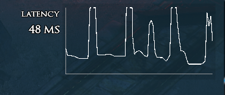

Hallo,
habe jetzt mal endlich von meinem Uralt 75/10 Tarif aus UPC Zeiten zu Magenta Gaming 300/50 gewechselt.
Seitdem habe ich Abends und am Wochenende immer Ping Probleme. Laut Pingtest usw ist alles normal, auch in Spielen sieht eigentlich alles ok aus, solange nichts los ist, wenn viel los ist, habe ich alle paar Sekunden kurze Spikes von 25 auf ~200ms Ping und ist damit eigentlich unspielbar.
Ist vor allem zur Primtime so, heute Vormittags war Ping immer gut, jetzt ist es wieder unspielbar, siehe Screenshot.

An der Leitung selbst kann es nicht liegen, vor dem Wechsel war ja alles super und beim Vertragswechsel war schon ein Techniker vor Ort, da Upload statt 50Mbit nur bei 0,05Mbit lag, Schuld war das Modem, aber die Leitung hat er auch gleich überprüft und den unnötigen Splitter entfernt.
Hatte jemand schonmal sowas, oder eine Idee, was man machen könnte? Eventuell auch Tipps wie ich mit dem Support umgehen soll, damit sie es verstehen und was erreicht wird? Zum Gamingtarif gehört ein guter Ping ja definitiv dazu. Sonst will ich halt eine außerordentliche Kündigung und nehme DSL ...
Hätte halt gerne die 50Mbit Upload gehabt, da ich ein eigenes VPN habe.
Hi Knuddelbearli, nach deinem Bild zu urteilen sieht das nach Path of Exile aus ;-)
Schreibe dir, da ich genau die gleichen Probleme habe, untertags läuft alles es reibungslos überhaupt keine Probleme (Ping ist immer bei 30m) und am Abend so um 18 Uhr herum geht es los, keine gute Verbindung (150ms am Amsterdam Server) und nur große Spikes...
Hallo @Scu89 , @Knuddelbearli ,
kann es an ausgelastete Server liegen? Für mich klingt das nämlich so. Wenn es nur ab 18 Uhr auftritt und ggf. morgens wieder passt. Müsste vielleicht der Spiele-Anbieter mehr Ressourcen und Serverkapazitäten anbieten.
LG JD.
vor 13 Stunden schrieb Jonathan Dorian:Hallo @Scu89 , @Knuddelbearli ,
kann es an ausgelastete Server liegen? Für mich klingt das nämlich so. Wenn es nur ab 18 Uhr auftritt und ggf. morgens wieder passt. Müsste vielleicht der Spiele-Anbieter mehr Ressourcen und Serverkapazitäten anbieten.
LG JD.
Funny joke, when man bei solche problem immer der Spiel Anbieter blamet.
Aber beim Deutche Telekom is das schon ein bekanntes routing Problem, wenn das ping NUR BEI MAGENTA am Primezeit passiert.
DTAG kann das lösen, werden Sie aber nicht, weil Sie wurde von ihre Carrier ISP (meistens Telia) gedrosselt, weil Magenta nicht genug Brandbreite kaufen, und somit funktioniert das Internet zwischen 5 und 10 uhr nicht ganz.
Lustig weil streaming auf 4K funktioniert ohne lags aber Gaming die man wenig brandbreite braucht nicht. Ich verstehe nicht wieso die DTAG hier das Geld spart.
Hey @bbi , @Knuddelbearli , @Scu89
ich wollte hier niemanden blamen. Soeben habe ich aber die Rückmeldung bekommen, dass die Ursache für die High Pings bei verschiedenen Games analysiert und gefunden werden konnte. Es werden bereits Verhandlungen geführt, um die Einschränkungen künftig zu beheben. Jetzt gilt es sich noch etwas in Geduld zu üben.
LG JD.
vor 7 Stunden schrieb Jonathan Dorian:Es werden bereits Verhandlungen geführt, um die Einschränkungen künftig zu beheben. Jetzt gilt es sich noch etwas in Geduld zu üben.
LG JD.
Von wo hast du diese Info? Welche Verhandlungen werden durchgeführt?
Letztens Wo ich an euren Techniker Hotline angerufen haben, das war glaube ich letzte Woche, meinte die Kollegen am Telefon das die IT-Team noch daran arbeitet und sucht wo der Proble ist. Und Sie suchen scheinbar schon seit November.
Ich bekomme nicht einmal eine bestädigung von euch wo ihr ein Problem identifiziert hat.
Aber wir als user können das Problem für 2 Monate jeden Tag mit tracert replizieren.(diese screenshots wurden bereits an euch geschickt und weitergeleitet laut Telefon)